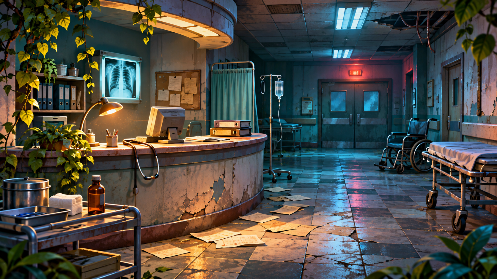

St. Jude’s Thoracic Institute
Decades ago, the cardiothoracic wing of St. Jude’s Hospital was abruptly sealed under emergency quarantine. Now, the heavy blast doors have locked behind you.
To escape through the sealed Cardiothoracic Operating Theatre, you must navigate the abandoned wards, solve clinical thorax anatomy challenges, and reconstruct the Chief Surgeon’s torn access document before your oxygen and vitals fail.
Emergency Briefing
How to Escape the Institute
Your anatomical knowledge of the thoracic wall, mediastinum, and cardiopulmonary circulation is the key to unlocking the hospital’s emergency exit systems.
1. Three-Room Progression
Room 1 (Radiology & Osteology Archive) and Room 2 (Cardiopulmonary Ward) are open immediately and can be explored in either order. Room 3 (Operating Theatre) remains locked until you enter the 4-digit access code.
2. Document Fragments
Completing Room 1 reveals the first torn fragment; completing Room 2 reveals the second torn fragment. Once both are collected on the Map screen, join them to read the 4-digit access code.
3. Timer & Life Points
You have 20 minutes and 100 Life Points (HP). Every incorrect submission deducts 10 HP. If your timer hits 00:00 or your HP drops to 0, the quarantine lockdown becomes permanent.
4. Clinical Hints & Feedback
Each diagnostic terminal provides immediate educational feedback after every attempt, plus an optional Clinical Hint button if you need an anatomical clue without losing points.
Quarantine Wing Navigation Map
Explore Room 1 and Room 2 in any order to recover both halves of the Chief Surgeon's access document.

AccessibleRoom 01
Radiology & Osteology Archive
Examine thoracic wall X-rays, sternal angle landmarks, and respiratory mechanics to unlock the steel filing cabinet.
Room 02
Cardiopulmonary Ward
Trace pulmonary circulation pathways and identify mediastinal neurovasculature to open the medical chart box.
Room 03 • Final Exit
Cardiothoracic Operating Theatre
Sealed behind a 4-digit security keypad. Reconstruct both document fragments below to uncover the unlock code.
Evidence Desk: Torn Access Document
Collect both fragments from Rooms 1 and 2 to join the torn edges and reveal the Room 3 keypad code.
Left Fragment
Complete Room 1 to recover
Fragment 1 Recovered

Right Fragment
Complete Room 2 to recover
Fragment 2 Recovered

Enter the 4-digit code from the reconstructed document to unseal the Operating Theatre.
The Radiology & Osteology Archive
Dust motes dance in the beam of your flashlight as you enter the archived records room. Skeletal models hang in glass cases, and yellowed X-rays are pinned to cracked lightboxes. A locked steel filing cabinet holds the first half of the Chief Surgeon's log.
On the lightbox, an X-ray highlights the sternal angle (Angle of Louis). Which of the following anatomical landmarks and events occur at this specific horizontal plane (T4/T5 intervertebral disc level)? Select all that apply.
An old anatomy chart on the wall details the mechanics of quiet inspiration. Complete the missing details to unlock the cabinet:
Filing Cabinet Unlocked!
Document Fragment 1 Recovered
Inside the drawer, you find the left half of the Chief Surgeon's torn access slip. It has been added to your Evidence Desk on the Map.
The Cardiopulmonary Ward
Rusted bedframes and overturned IV stands clutter this darkened ward. An old mechanical ventilator sits beside a dusty anatomical heart model. A combination lock secures the medical chart box containing the second half of the missing log.
A faded patient chart traces a drop of deoxygenated blood returning from the systemic circulation through the heart and lungs. Arrange the structures in the correct anatomical sequence of blood flow, starting from the right atrium:
Match each mediastinal structure or nerve on the left with its correct anatomical relationship or function on the right:
Medical Chart Box Unlocked!
Document Fragment 2 Recovered
Beneath the patient records, you retrieve the right half of the Chief Surgeon's torn access slip. It has been added to your Evidence Desk on the Map.
The Cardiothoracic Operating Theatre
The heavy steel doors hiss open as you enter 4217. Overhead, a single surgical lamp flickers above the operating table. On the instrument tray lies the master exit keycard, locked inside a sterilizer box controlled by a final diagnostic terminal.
What is the specific clinical name of this life-threatening condition? (Two words)
Quarantine Escaped
You Escaped St. Jude’s!
The sterilizer box clicks open, releasing the Master Exit Keycard. With the heavy blast doors sliding open behind you, you step out into the fresh night air—having mastered the clinical anatomy of the thorax.
Time Remaining
--:--
Remaining Vitals
100 HP
Rooms & Clues
3/3 • Code 4217
Lockdown Permanent
Mission Failed
Your vital signs reached zero before you could unseal the Cardiothoracic Operating Theatre.